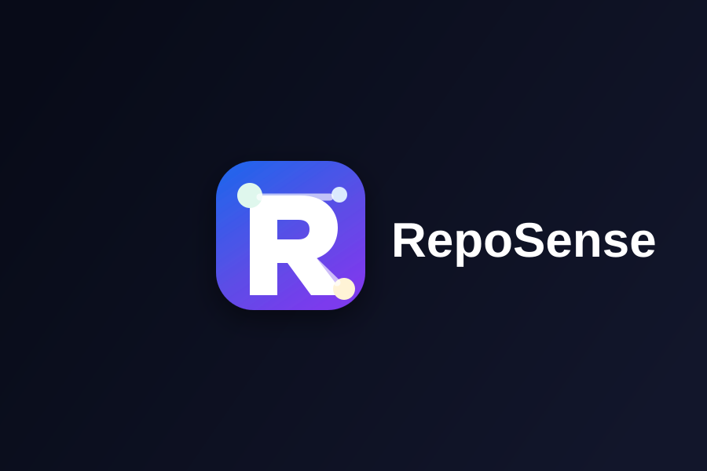
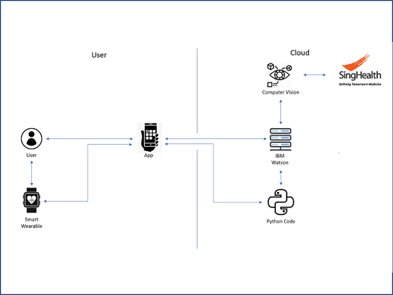

Orchestrator
Command Center
A local-first personal dashboard that aggregates actionable summaries from independent services without sharing their databases.
I have been coding for nine years and have worked with a range of programming languages (more details below).
I enjoy breaking problems down, thinking through the details, and finding ways to make my solutions more efficient. Most of my experience so far has come from full-stack development projects.
As I continue building on that foundation, I am also exploring software engineering, AI and machine learning, and cybersecurity to find the areas I want to grow deeper in.


A small project with a lot of sentimental value
Using Hermes as my development partner, I have been turning real needs into maintainable local applications. Each service owns its data and responsibilities, while Command Center brings read-only summaries together through explicit APIs.
A local-first personal dashboard that aggregates actionable summaries from independent services without sharing their databases.
A private NUS academic dashboard for coursework, module planning, lecture materials, notes, and semester-scoped study workflows.
A private internship opportunity catalog and application pipeline for Singapore openings, with transparent matching and next actions.
A loopback-only health dashboard for routines, completion history, meals, and future Apple Health summaries with unknowns kept honest.
The AI-assisted environment behind this work: Telegram conversations, tools, memory, skills, scheduled tasks, browser automation, and delegated workflows.
These projects are intentionally private and local-first. The architecture, constraints, and lessons are documented here without exposing personal data.
6 years of experience
Python, JavaScript, and C#
Some data analytics work with Python
3 years of experience
AWS and Alibaba Cloud
Used for hackathons and web hosting
3 years of experience
Scikit-learn and TensorFlow
Building and applying machine learning models
Emaili.am.limjingkai@gmail.com
Contact No+65 8818 1012